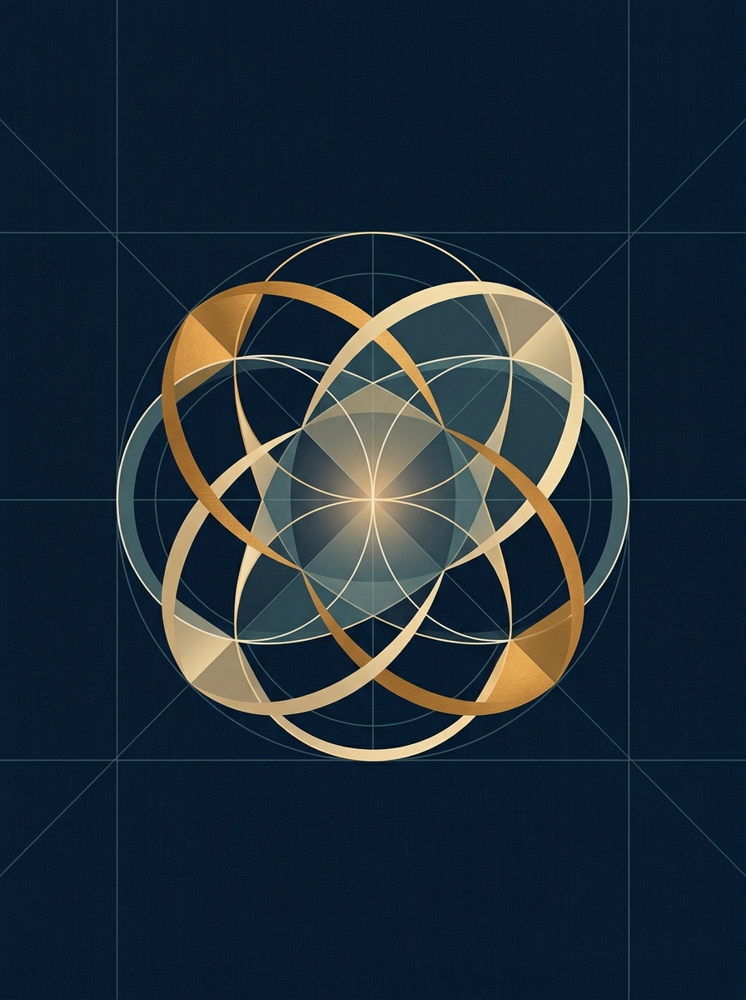

氛圍 Vibe
孤獨時代的強連接秘訣：從四維介面到真正知己的躍遷法則

從「四維介面校準（1047）」到「知己躍遷三誤解與五行動（1048）」構成強連接閉環
你心中的朋友名單只有一半是雙向的——病灶不在感情薄涼，而是「朋友」一詞太含糊
問題不出在感情，問題出在詞彙本身
- 「朋友」這兩個字在日常語言裡承載了過多完全不同的功能。
- 當雙方心裡裝著不同定義時，根本無法對齊彼此的期待。
跨越「體制內 vs 創業公司」的職場差異
- 許多國外研究只看單一商業公司；回到華人環境，一輩子幹到老的體制內與高流動創業公司相處模式截然不同。
- 格蘭特改從人類物種的普遍共性出發，案例從太空站到體育場。
將「朋友」精準拆分為熟人、戰友、玩伴、知己，破除「全能朋友」幻覺
對立學派也能相交四十年：路易斯與托爾金憑「契合介面」催生兩大奇幻經典
背景、信仰與牛津學派全面對立
| 對比維度 | C.S. 路易斯 | J.R.R. 托爾金 |
|---|---|---|
| 出身背景 | 愛爾蘭裔 | 天主教徒 · 立場保守 |
| 學術領域 | 偏重英國文學 | 古英語與北歐語言 |
| 宗教初期 | 無神論者 | 虔誠天主教徒 |
| 校內立場 | 牛津對立學派，教學委員會上常互投反對票 | |
性格完全相反也能在太空力挽狂瀾：靠的不是合拍，而是按場合切換對待介面
極致職業默契不必延伸到私生活——許多黃金搭檔在戲外從來不是親密朋友
弗雷德·阿斯泰爾 ✕ 金杰·羅傑斯
銀幕上的雙人舞蹈默契堪稱影史典範，令所有觀眾深信兩人私交甚篤。
金杰·羅傑斯在自傳中直言：兩人是非常出色的職業搭檔，戲外從不是親密無間的朋友。
周星馳 ✕ 御用配音員石班瑜
石班瑜的招牌笑聲與聲線早已成為無數觀眾心中周星馳喜劇形象不可分割的一部分。
石班瑜在採訪中回憶：兩人私下其實並不熟悉、見面機會極少，甚至沒一起吃過飯。
你面對的不是一個「完整的人」，而是當下被情境調用的「人性不同介面」
只是交互那一刻，彼此調用的介面不同
也許你此刻正喚醒心中猛虎全力衝刺，而對方剛好在享受片刻閒暇；於是他在你眼裡就瞬間被貼上「不求上進」的標籤。
別拿單一介面去審判一個人的全部
- 看懂介面分置，就不會因同事偶爾摸魚或家人刷短影音而全盤否定對方。
- 同時區辨清楚：本頁屬於講者李南南的延伸觀察，與格蘭特原書實證並列參考。
「人同此心，心同此理」：戒除偽受眾定位藉口，以自己真心認可作溝通最高標準
為什麼很多人喜歡把「受眾定位」掛在嘴邊？
- 錯誤預設：假設人與人是截然不同的物種——年輕人只愛八卦、中年人必定焦慮、某類人無條件關心商業新聞。
- 真實動機：這個詞對創作者／溝通者「太好用」——就算自己不喜歡這份稿件或簡報，也能自我安慰「世界上有那一類受眾會喜歡」，從而心安理得地交差。
- 必然結果：建立在「假設不存在的差異」之上，寫出或講出的內容大概率不好看、難打動人。
你自己就是最好的標準——難在誠實面對自己
知己並非「熟人升級版」：200 項客觀相似無法預測化學反應，關鍵是感覺「是一類人」
熟人看「客觀相似」，知己／戰友看「核心共鳴」
每週相處 2 小時、彼此具備相似度等常見法則，按格蘭特標準都只停留在「熟人」邏輯；一旦硬套到戰友或知己身上，許多常識立刻失效。
金屬樂團（Metallica）：吵了幾十年卻始終沒散
- 表面撕裂：吉他手與主唱吵創作權、鼓手與貝斯手吵分錢，一度連在同一個錄音棚都待不住，只能分開錄音再把音軌剪到一起。
- 為何沒解散？四人性格完全不同，但在一件事上是絕對的一類人——對搖滾樂的熱愛。這一個核心共同點，壓過了所有其他分歧。
快速靠近靠的不是「100–200 小時時長」，而是共同經歷的「高強度體驗」
樣本拆分：約 25% 成年人 <5 小時變成真朋友
100–200 小時只是均值；比時長更決定性的，是相處時間裡發生過什麼。
搖晃吊橋組回撥電話率 ＝ 穩固水泥橋的 4 倍
走湍急河流上方的搖晃吊橋會產生生理緊張，而身體無法分辨緊張來源——橋頭女志願者遞上電話時，大腦就把緊張錯解讀成「我對眼前這個人心動／投緣」。
「好朋友從不吵架」保護的是距離——有分量的分歧才是真正「在乎」的強訊號
亞當·格蘭特 ✕ 心理學家布琳·布朗 (Brené Brown)
- 劇烈衝突：幾年前兩人在一次公開對談裡爆發劇烈衝突，之後好幾年不再說話。
- 破冰成摯友：今年兩人攜手開了一檔播客，不僅和解，更成為真正的朋友——印證「最後最喜歡的人，有時恰是最開始最不喜歡的」。
熊浩在《溝通的原則》強調「衝突比偽共識更真實」；格蘭特在《Vibe》則從腦科學與社會心理學給出另一半拼圖：有分量的分歧並不可怕，只要後續能像熊浩說的執行「重啟」，這份衝突反而會將雙方推向更高的信任海拔。
不靠高頻寒暄維繫感情：掌握弱連結、破冰題、出汗體驗、脈衝聯繫與意圖前置
「介面分類（止損期待）」＋「破除三誤解與五行動（主動躍遷）」完成全書閉環
用「四維介面 ✕ 躍遷機制矩陣」校準團隊與人脈，既降內耗又養出真戰友與知己
| 關係維度 | 核心驅動 | 典型對象與實證 | 深化／保鮮關鍵動作 (1048) | 常見誤判陷阱 (1047+1048) |
|---|---|---|---|---|
| 1. 熟人 | 便利 ✕ 互惠 | 鄰居、店老闆、順路同事、久未聯繫老友、太空控制台搭檔 | 重啟弱連結（偶爾發訊問候）＋趣味破冰題（熱狗算三明治嗎） | 別把熟人邏輯（時長／客觀相似）硬當作知己標準 |
| 2. 戰友 | 共同目標 | 專案搭檔、金屬樂團、達勒姆 10 天搭檔、阿斯泰爾/石班瑜 | 共同高強度體驗（打勝仗）＋意圖前置溝通分歧 | 別因性格不同或戲外不聚餐就懷疑彼此戰友默契 |
| 3. 玩伴 | 共同興趣 | 球友、劇搭子、酒搭子、每週二牛津酒吧「墨水社」 | 一起出汗心跳加速（跑步、爬山、看刺激公開活動） | 別強求興趣搭子分擔職場焦慮或全部情緒課題 |
| 4. 知己 | 深度情感 ＋價值觀 |
路易斯✕托爾金、阿特沃特✕埃利斯、格蘭特✕布琳·布朗 | 感覺是一類人＋允許有分量的分歧＋脈衝式深聊 | 別找「安全型相似」複製品，也別怕偶爾半年不聯絡 |
真正推近同事距離的不是「吃一百頓飯」，而是一起熬過高張力專案（打勝仗是最好的團建）並在分歧時先說「我相信我們都想把事做好」。
效法巨蟒劇團「脈衝式聯繫」：告訴重要夥伴「幾個月沒聯繫不代表不在乎」，讓高質量深聊取代低效日常打卡。
不求複製另一個自己，用四維介面與高強度共事打造孤獨時代的強連接
熟人、戰友、玩伴、知己——各安其位
50% 單向名單源自詞彙含糊；不強求「全能朋友」，在對的場合切換對的介面。
真正的知己，偏偏不是另一個自己
200 項客觀相似預測率約等於瞎猜；核心熱愛共鳴（如金屬樂團）才壓得過分歧。
高強度體驗加速靠近，有分量分歧建立高信任
打勝仗、吊橋效應、達勒姆 10 天共事與衝突後重修，比平淡時長與不吵架更有力量。
脈衝式深聊維繫情誼，真心認可衡量表達
允許彼此各忙各的、階段性深聊；溝通與作品則秉持「人同此心、誠實面對自己」。
個人與團隊馬上落地行動清單
- 四維名單校準：列出 5 位往來對象，標出熟人/戰友/玩伴/知己歸屬，消除錯位期待。
- 重啟一條弱連結：今天傳一則簡單問候給某位久未聯繫但欣賞的老朋友或前同事。
- 設計一次「共同出汗/攻堅」：用一場硬仗專案、爬山或緊張發表會取代無效應酬飯局。
- 團隊分歧「意圖前置」：下次提不同意見前，先開口確認：「我相信我們都希望把這件事做好。」